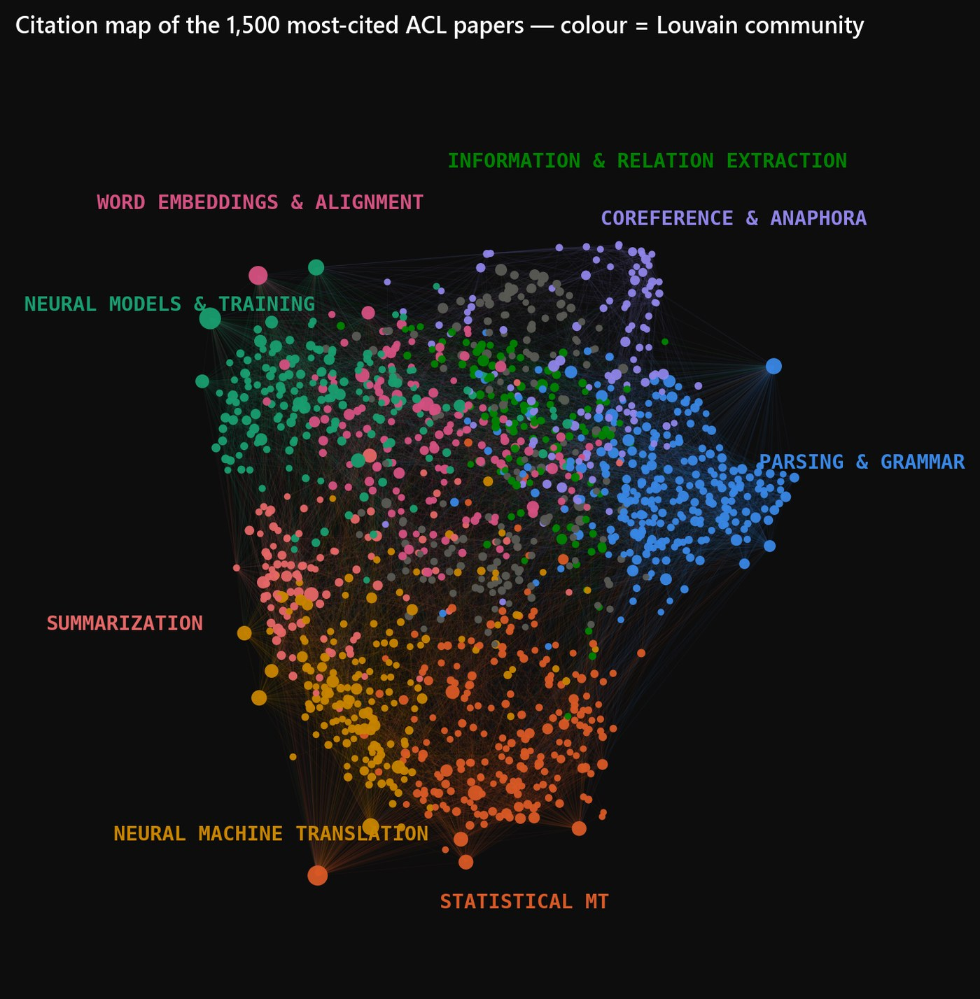
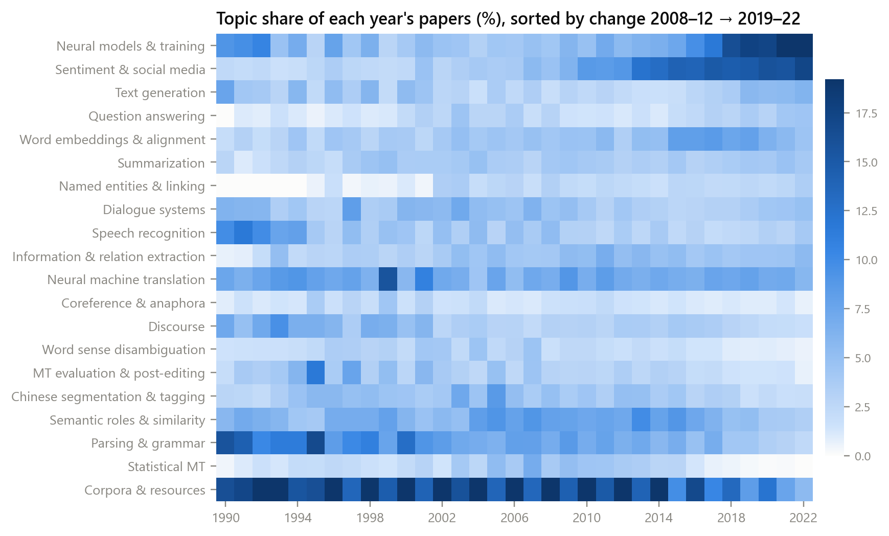
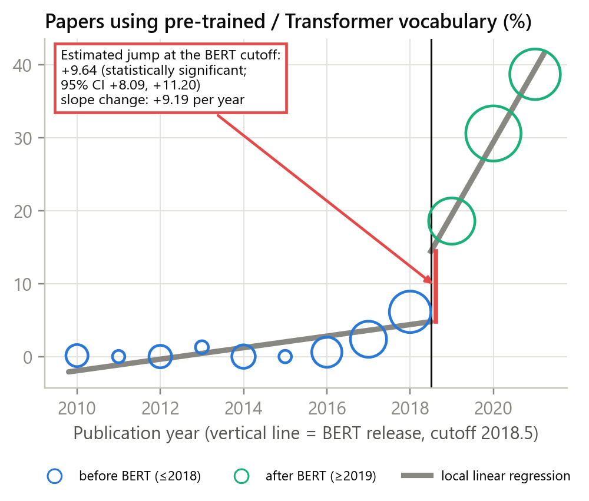
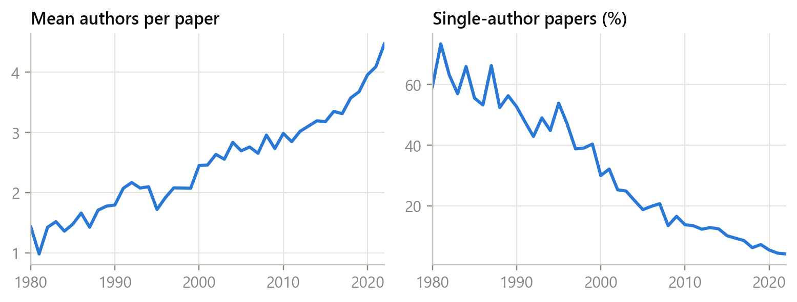
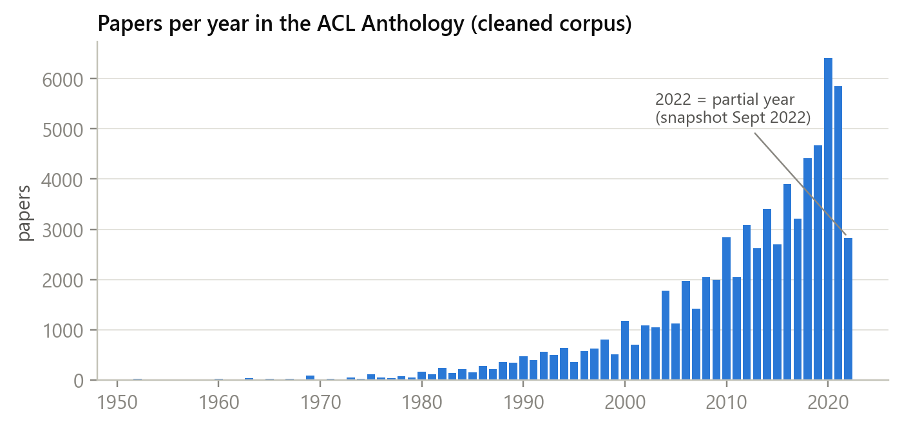
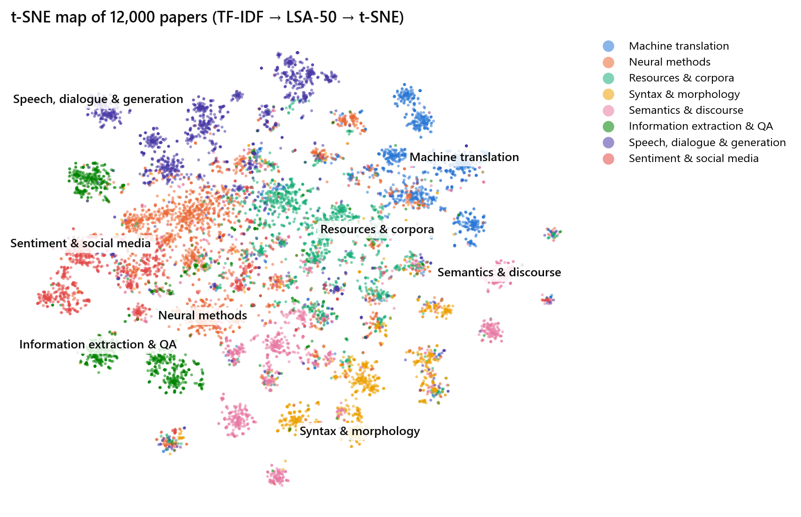

Research splits into citation communities
We built a network where every paper is a dot and every citation is a line, then asked an algorithm to find groups of papers that mostly cite each other. It found 24 clear communities, with a modularity of 0.61, which means the grouping is strong rather than accidental. The labels in the picture were added afterwards, from the most common topic inside each group.
The surprise is how weakly these communities match the topics we found from the words in the papers: the agreement score is only 0.23 out of 1. In other words, researchers cite papers from their own research family even when those papers use completely different vocabulary. Machine translation, for example, splits into a statistical community and a neural one that sit next to each other but barely overlap.

Topics rise and fall over decades
Comparing 2008–12 with 2019–22, neural models grew by 14.4 percentage points and work on sentiment and social media grew by 8.5. Over the same period, building corpora and resources fell by 9.9 points, and both statistical machine translation and parsing fell by 4.1 points each.
Look closely at the corpora and resources row and a striped pattern appears, dark in one year and light in the next. This is the anomaly described below, and it turned out to have a simple real-world explanation.

The field changed course in 2019
Google released the BERT model in October 2018, so 2019 is the first conference year after it. We treated that date as a boundary, fitted one trend line to the years before and a separate one to the years after, and measured the gap between them.
The share of abstracts using pre-trained model vocabulary jumped by 9.6 percentage points at that boundary (95% confidence interval 8.1 to 11.2), and its yearly growth rate rose from under 1 point a year to about 9. By 2021 it had reached 38.7% of all abstracts. We also found that papers began citing newer work: the average age of a cited paper fell by 0.66 years at the same boundary.
We are careful about the wording here. A calendar year is not a random dividing line, and other things happened nearby, such as the Transformer in 2017. So this measures that the field changed at that moment; it does not prove that BERT alone caused it.

Research became teamwork
In 1990 the average paper had 1.79 authors and 52.6% were written by a single person. By 2022 the average team had grown to 4.47 authors and single-author papers had almost disappeared, down to 4.2%.
The collaboration network tells the same story. We linked two researchers whenever they wrote a paper together: in 1990 only 11.5% of authors could reach each other through chains of co-authors, but by 2022 83.3% belonged to a single connected group. A field of separate small labs became one connected community.

The field doubled in a decade
Output grew from 2,845 papers in 2010 to 5,854 in 2021. Growth is slow until the mid-2000s and then climbs steeply, which matches the arrival of cheap computing power and large datasets.
This chart also carries a warning for anyone analysing the archive: the number of papers per year is so uneven that any measurement has to be reported as a share of that year's papers, never as a raw count, otherwise recent years dominate everything.

Similar research forms visible neighbourhoods
Each paper starts as a list of thousands of word scores, which cannot be drawn. We compressed this to 50 numbers using SVD and then to two using t-SNE, so that papers with similar text end up near each other on the page.
Clear neighbourhoods appear for machine translation, speech and dialogue, and information extraction, which is a good sign that the topics we found are real and not an artefact of the method. The boundaries overlap, which is honest: a paper about translating speech genuinely belongs to two areas at once.
Anomalies, observations and patterns
- Anomaly — a striped pattern in even and odd years. In the topic heatmap, papers about corpora and resources alternate between dark and light bands. Between 2000 and 2015 this topic averaged 21.5% of papers in even years but only 13.8% in odd years. The cause is not a bug in our data: LREC, the main conference on language resources, is held only in even-numbered years, and it is large enough to bend the statistics of the whole field.
- Anomaly — papers citing the future. The raw citation data contained 457 records where a paper cites something published more than a year later, which is impossible. These come from version mix-ups in the source data and were removed. Every row in the raw citation file was also duplicated exactly, which would have doubled every count had we not checked.
- Anomaly — missing abstracts are not random. Only 43.5% of papers have an abstract, and the missing ones are concentrated before 2016. Measuring text trends naively would have shown a fake jump exactly where coverage improves, so all trends over time are measured on titles instead.
- Observation — citations are extremely unequal. The top 1% of papers collect 32% of all citations, a third of papers are never cited at all, and the Gini coefficient is 0.82, which is higher than the income inequality of most countries.
- Observation — impact is partly predictable. Using only facts known on publication day, our model ranks future top-10% papers with an ROC-AUC of 0.81. Among the papers it ranked highest, 35.6% really did become highly cited, against a 10% base rate. The strongest signals were the number of references, the conference, and the size of the team.
- Pattern — old methods fade as new ones arrive. Association rule mining shows the handover directly: the pairing "pre-trained model and fine-tuning" appeared in 0.04% of abstracts during 2010–18 and in 5.9% during 2019–22, while "SVM and classification" halved and "LSTM and attention" fell by a third.
- Pattern — a new research community forms. The strongest association rule we found links social media and speech to work on hate and offensive language, 23.6 times more often than chance would give. This topic barely existed before 2016 and is now a research area with its own shared tasks.